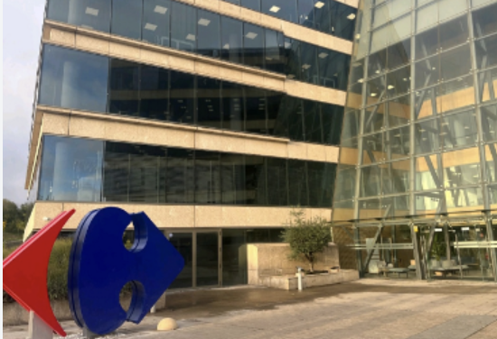
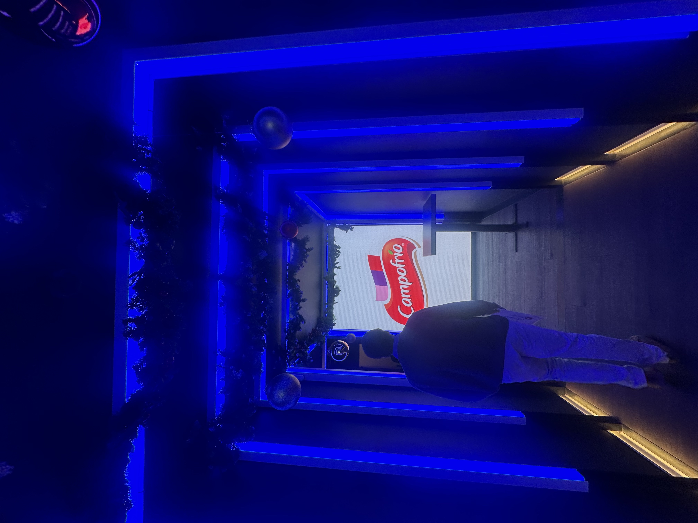
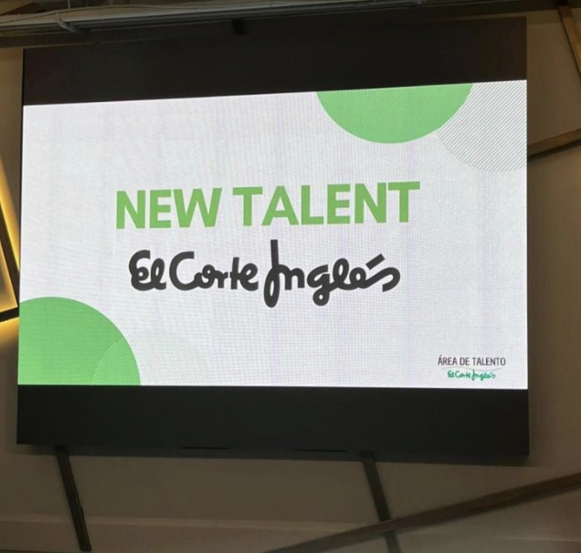
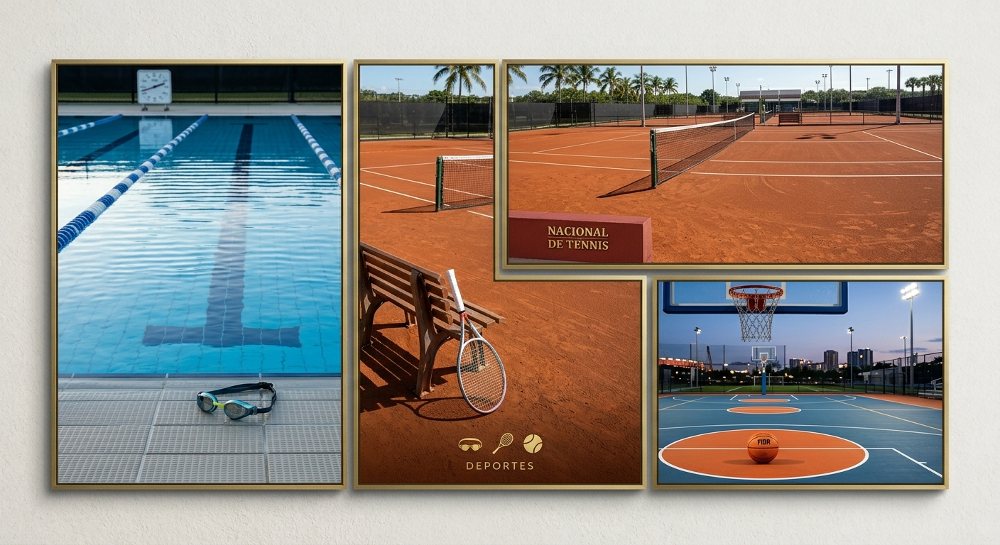

Doble Grado en ADE y Data Science · ESIC University
Estudiante con marcado perfil internacional, proactiva y orientada a la resolución ordenada de retos empresariales. Con experiencia contrastada en Carrefour (donde asumí la iniciativa de automatizar 6 procesos en Python), Campofrío (controlling comercial en SAP) y El Corte Inglés (procesos As-Is/To-Be y forecasting). Intercambio Erasmus en KEDGE (Bordeaux) con nota 8,63/10 e inmersión lingüística en Irlanda.
Elevator Pitch: Visión analítica, rigor y orientación a resultados.
Resultados comprobados en automatización de procesos mediante código, controlling de márgenes comerciales y análisis funcional de sistemas. (Haz clic en cualquier foto para ampliarla en alta definición).
Diana presentando el cuadro de mando de reporting y toma de decisiones.



Dominio de modelado cuantitativo, pipelines de automatización de datos, business intelligence y soluciones de inteligencia artificial aplicada.
Interacción con arquitecturas neuronales, modelado analítico y toma de decisiones.
Scripts automatizados ETL en Python (Pandas, NumPy, Spyder) y modelación econométrica y estadística en R.
Diseño de cuadros de mando ejecutivos en Power BI (DAX, Power Query) y analítica web en Google Analytics 4.
Gestión comercial y facturación en SAP ERP, analítica en IBIS y modelos financieros en Excel Avanzado.
Infraestructura Azure (AZ-900), cargas de Azure AI (AI-900), mapeo As-Is / To-Be y pruebas UAT.
Intercambio académico en Management superado con una calificación media de 8,63 / 10. Explora con las flechitas las 3 fotos del campus y la experiencia en Burdeos. (Haz clic en cualquier foto para ampliarla).
Estancia académica de alta exigencia en una institución con la prestigiosa Triple Corona internacional (EQUIS, AMBA, AACSB). Cursos impartidos íntegramente en inglés orientados a la gestión sostenible, la estrategia global y la negociación en equipos de diversas nacionalidades.
Usa las flechitas para ver las 4 fotos de la inmersión en Bray (Irlanda) con el programa Interway. (Haz clic en cualquier foto para ampliarla).
Programa intensivo de un mes para el perfeccionamiento del idioma inglés y la adaptación sociocultural en un entorno anglófono nativo. Experiencia decisiva para el desarrollo de la autonomía personal, la resolución espontánea de situaciones y la fluidez comunicativa en entornos internacionales.
Doble Grado en ESIC University (ADE + Data Science) y presentación del Trabajo de Fin de Grado (TFG) sobre liderazgo e innovación en Amazon.
Doble titulación universitaria estructurada para dominar tanto la toma de decisiones empresariales como la modelación matemática, la analítica predictiva y la arquitectura de datos.
Investigación empírica y analítica sobre cómo el estilo de liderazgo transformacional y la obsesión por el cliente de Jeff Bezos han impulsado el crecimiento exponencial de Amazon desde una librería online hasta un líder de la economía digital. Metodología mixta con encuesta cuantitativa a 170 participantes (escala Likert) y entrevistas internas a empleados sobre cultura y bienestar laboral.
Compromiso ético y vocación de servicio que enriquecen el trabajo en equipo.

Introduce tu propia Gemini API Key para que te responda en primera persona mediante el modelo oficial de IA de Google en tiempo real. Se guarda exclusivamente en tu navegador (localStorage).
Subtítulo de contexto